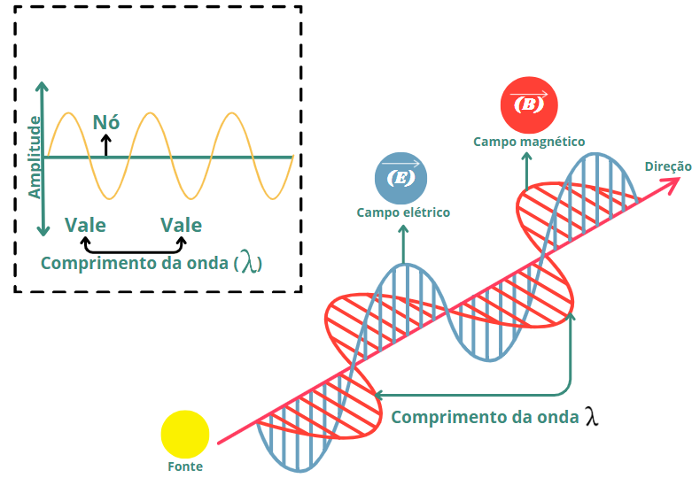

Ondas de Infravermelho
- Definição:Ondas de infravermelho são uma forma de radiação eletromagnética com comprimentos de onda que variam entre entre 1 mm1 e 1 μm2. Elas são consideradas não ionizantes.
- Frequência:A frequência das ondas de infravermelho está abaixo da luz visível, variando de 1011 Hz até 1014 Hz.
- Aplicação: Usadas em aquecimento, controle remoto, câmeras de visão noturna, termômetros infravermelhos, câmeras termográficas, laser infravermelho, controles remotos, sensores de movimento, fones de ouvido sem fio, dispositivos biométricos, câmeras de visão térmica, secadores industriais, vistemas de segurança e vigilância e lâmpadas infravermelhas.
- Efeito:As ondas de infravermelho são usadas para detectar calor e em tecnologias de imagem térmica, permitindo a visualização de objetos com base na radiação térmica que emitem.
